Франция
Страна круассанов, Эйфелевой башни и слова «amour» — там, где каждая деревня похожа на открытку.
Франция — страна, которую придумали, кажется, специально для романтиков и гурманов. Здесь готические соборы соседствуют с модными бутиками, виноградники Бургундии — с лавандовыми полями Прованса, а любой разговор легко превращается в спор о том, где готовят лучший багет. Разберёмся, где находится эта страна на карте, что стоит увидеть за один день, какая у неё кухня, флаг, герб и главные праздники.
Франция на карте мира

Франция — Западная Европа, самая большая страна региона
«Гексагон»: сами французы называют свою страну L'Hexagone — «шестиугольник» — из-за характерной формы очертаний на карте.
С кем граничит Франция
Материковая Франция соседствует сразу с восемью странами:
Вода со всех сторон
Наведи курсор на карточку, чтобы узнать больше:
Атлантический океан
Омывает западное побережье — от Бретани до Бискайского залива
Ла-Манш
Отделяет Францию от Великобритании на севере
Средиземное море
Юг страны и знаменитый Лазурный берег
Общие сведения
Площадь
643 801 км² (47-я в мире)
% водной поверхности
0,26 %
Население
68 084 217 чел. (22-е)
Плотность
123 чел./км²
Столица
Париж
Форма правления
Президентско-парламентская республика
Официальный язык
Французский
Президент
Избирается на 5 лет
Названия жителей
Французы
Валовой Внутренний Продукт
На душу населения
45,454 долл.
Итого (2020)
2,551 трлн
Валюта
евро(EUR)
Телефонный код
+33
Часовой пояс
UTC+1, летом UTC+2
Интерактивная карта регионов
Наведи курсор на плитку — появится административный центр региона и любопытный факт о нём. Кнопки ниже подсвечивают целую макрозону страны.
Наведите курсор на любую плитку карты — здесь появится административный центр региона и интересный факт о нём.
Один день во Франции
Представьте, что сегодня вы проснулись во Франции. Как может выглядеть ваш идеальный день?
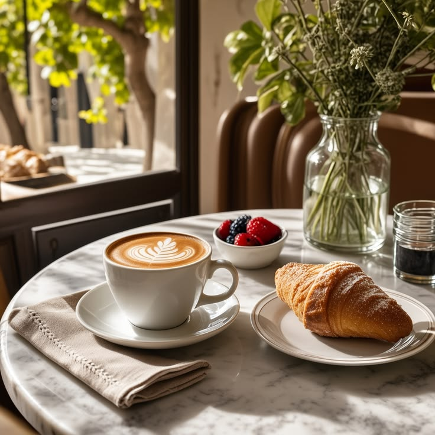
Круассан и кофе в квартале Марэ
Начните утро как местный — с булочной на углу и эспрессо стоя у барной стойки.
📍 Квартал Марэ, Париж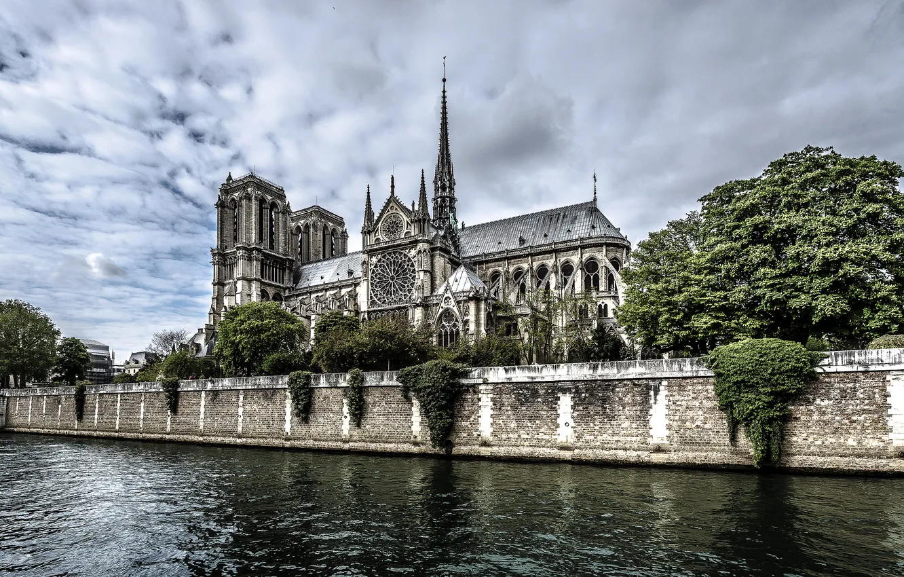
Собор Нотр-Дам и остров Сите
Прогулка по историческому сердцу Парижа, откуда начинался город.
📍 Остров Сите, Париж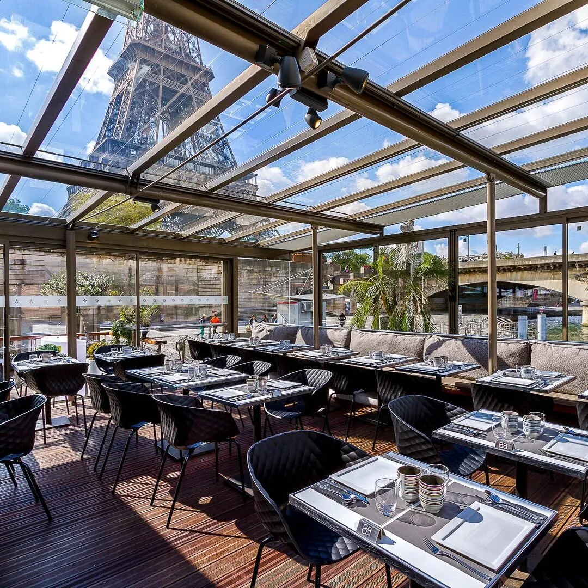
Обед в бистро у Сены
Классика: луковый суп или стейк-фри с видом на набережную.
📍 Набережная Сены, Париж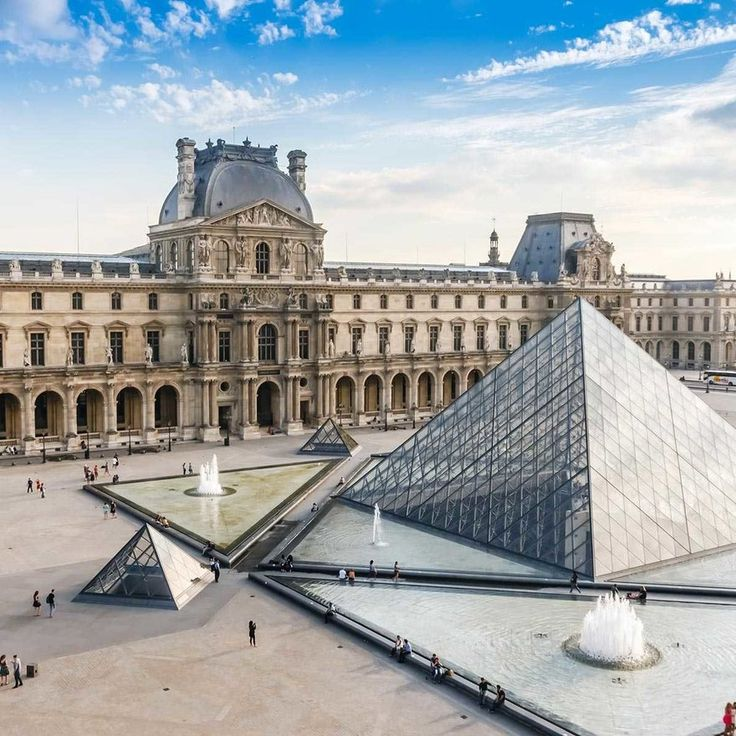
Лувр или Музей Орсе
Выберите один музей и посвятите ему пару часов — охватить всё за раз невозможно, и не нужно.
📍 Лувр, Париж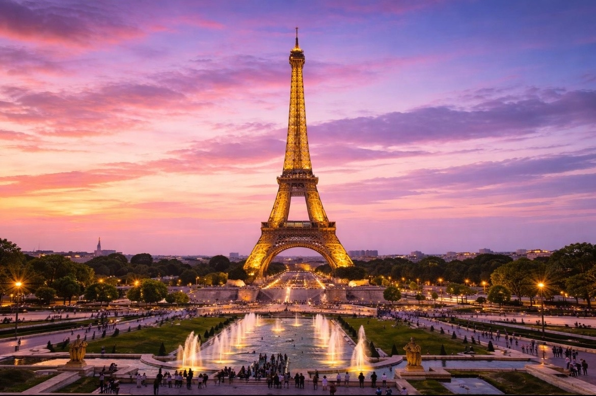
Закат на смотровой площадке Трокадеро
Лучший вид на Эйфелеву башню — и без толп у самой башни.
📍 Площадь Трокадеро, Париж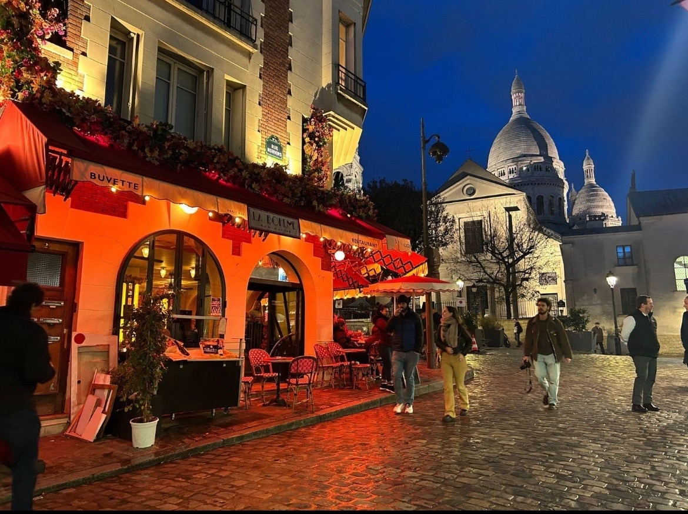
Ужин на Монмартре
Завершите день среди узких улочек художественного квартала — с бокалом вина и видом на ночной город.
📍 Монмартр, ПарижСамые красивые места
 Эйфелева башня
Эйфелева башня
Символ Парижа и одно из самых узнаваемых мест Франции.
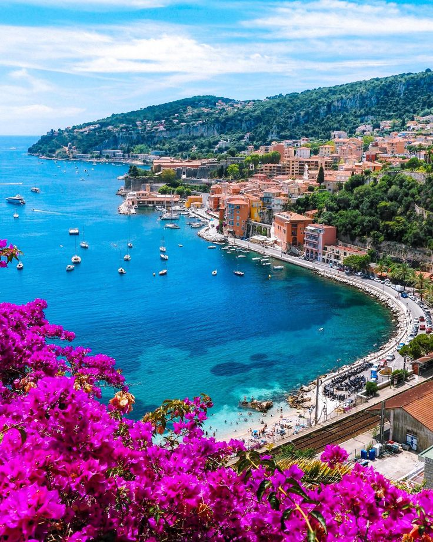
Лазурный берегСолнечное побережье с бирюзовым морем и красивыми городами.
 Мон-Сен-Мишель
Мон-Сен-Мишель
Средневековое аббатство на скалистом острове, окружённое приливами
 Версальский дворец
Версальский дворец
Роскошный дворец с величественными залами и огромными садами.
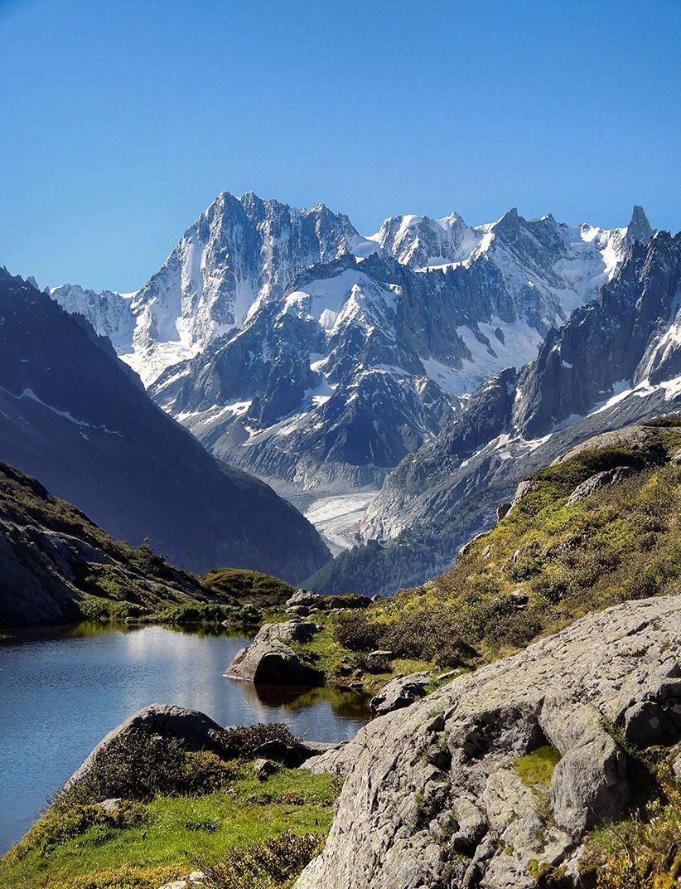
МонбланВысокие Альпы, заснежанные вершины и невероятные горные пейзажи.
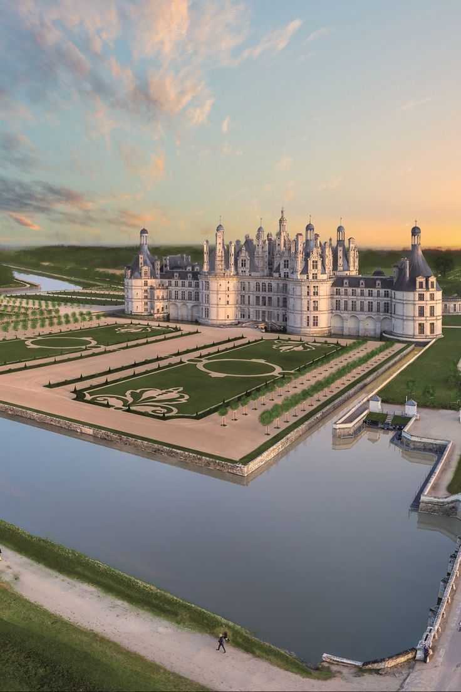
Долина ЛуарыЖивописный регион Франции, знаменитый замками и красивыми садами.
Национальная кухня

Круассан и выпечка
Слоёное масляное тесто, придуманное для завтрака, стало визитной карточкой страны. Настоящий французский круассан хрустит снаружи и тает внутри — секрет в многократном складывании теста с маслом.
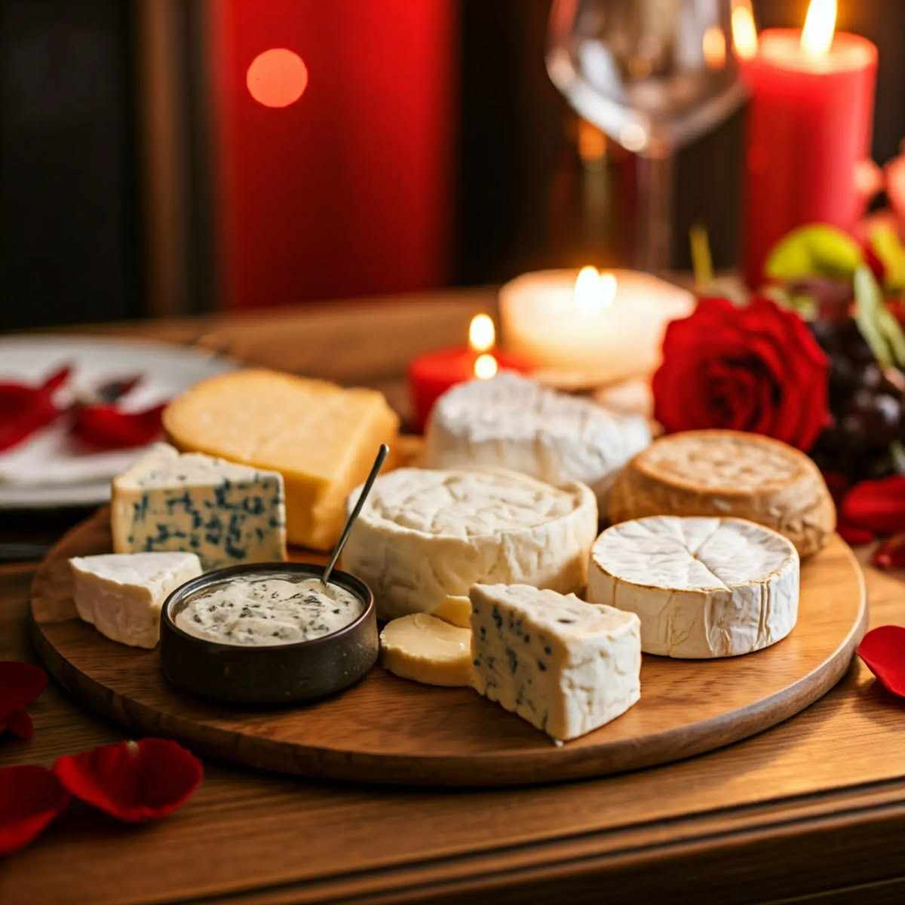
Сыр на любой вкус
Во Франции производят более 400 видов сыра — от мягкого бри и камамбера до острого рокфора. Говорят, здесь есть свой сыр на каждый день года.

Вино и десерты
Макарон, эклер и крем-брюле — французские десерты продуманы до мелочей. А бокал вина к ужину здесь не роскошь, а часть повседневной культуры.
🇫🇷 Флаг Франции
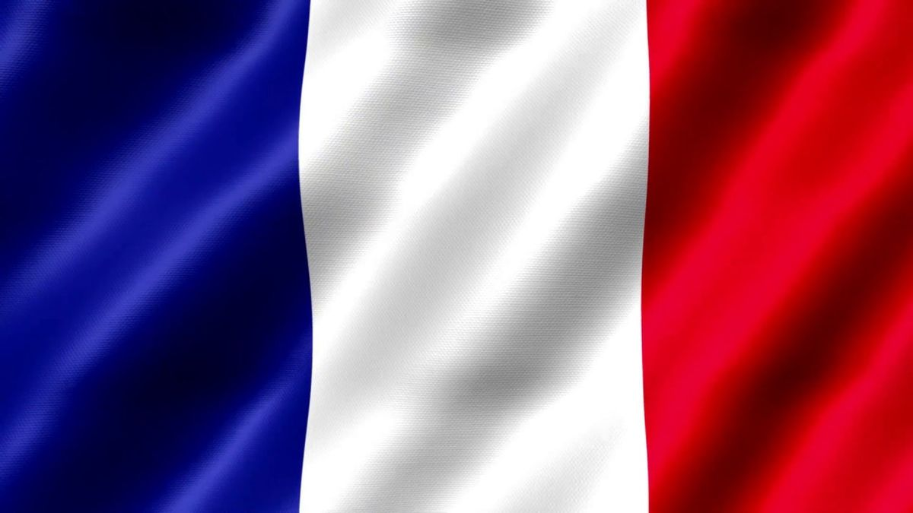
Le Drapeau tricolore — французский триколор
Наведи курсор на каждую полосу, чтобы узнать её значение:
Синий
Цвет Парижа и символ свободы — одного из девизов Республики
Белый
Древний королевский цвет, символизирует равенство
Красный
Тоже цвет Парижа, символизирует братство и цену свободы
Герб Франции
У Франции нет официального герба со времён революции, но есть узнаваемая неофициальная эмблема Пятой республики:
Государственные праздники
Главный праздник страны — 14 июля, День взятия Бастилии. По всей Франции проходят военные парады, балы пожарных и фейерверки, а самый эффектный салют устраивают на фоне Эйфелевой башни.
Новый год
Jour de l'An — семейный праздник и начало года
День труда
Fête du Travail — с традиционным букетом ландышей
День Победы
Капитуляция Германии во Второй мировой войне
День взятия Бастилии
Главный национальный праздник страны
Успение Богородицы
Assomption — католический праздник
День всех святых
Toussaint — день памяти усопших
День перемирия
Окончание Первой мировой войны в 1918 году
Рождество
Noël — главный семейный праздник зимы